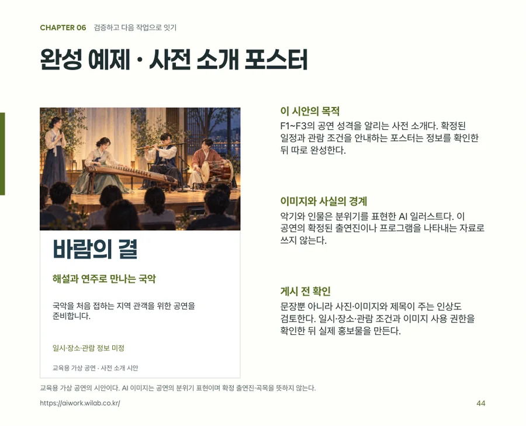

진행노트 / 확장 가능성
책으로 엮은 경험,
소개서로도
이어집니다.
내 자료를 정리하고, 읽는 사람과 목적에 맞게 구성하는 방법. 교육 자료에서 시작한 이 과정을 제품소개서와 기업소개서에도 적용할 수 있습니다.
세 가지 적용 방식 비교하기 ↗
지금은 교육 자산 사례를 제작했습니다.
제품·기업 소개서는 다음 실증을 위한 구성 예시입니다.
실제 제작 사례풍류 AI실무 -01


하나의 강의 자료에서책 · 워크북
일러스트 · 예제녹취록 6개를 바탕으로
V13 50쪽까지 발전시켰습니다.
책 속 자료 준비 일러스트와 실제 편집 지면. 실존 공연을 촬영한 사진이 아닙니다.
01 / 공통으로 쓰는 방법
결과물이 달라도,
제작의 순서는 이어집니다.
출발 자료와 전달 목적은 달라집니다.
자료를 다루는 다섯 단계는 다시 사용할 수 있습니다.
- 01
수집
녹취·문서·사진을 모읍니다.
- 02
구조화
사실·메시지·사례를 구분합니다.
- 03
설계
독자와 사용 목적을 정합니다.
- 04
제작
목적에 맞는 형식으로 만듭니다.
- 05
검수·활용
원자료와 대조하고 사용합니다.
다음 작업을 위한 연결고리
구조화된 기준 원고확인된 사실, 핵심 메시지, 대상 독자, 표현 원칙, 미정 정보, 출처를 한곳에 정리합니다. 여러 결과물에서 함께 지킬 기준입니다.
02 / 어떻게 확장할 수 있을까
자료를 바꾸면,
답해야 할 질문도 달라집니다.
적용 대상을 선택해 보세요.
준비 자료부터 결과물과 검수 기준까지 바뀝니다.
현재 실증 · 제작물 보유
강의에서 설명한 경험을
배우고 실습하는 자료로.
우리 프로젝트는 강의 녹취록에서 설명·사례·질문을 추출해 책과 워크북으로 발전시켰습니다.
- 원천 자료
- 강의 녹취록 6개, 참고 자료, 디자인 피드백
- 독자에게 줄 가치
- 핵심 내용을 이해하고 자기 자료로 직접 해보기
- 구성의 기준
- 개념 → 사례 → 따라 하기 → 직접 작성 → 검토
- 검수할 내용
- 원래 설명의 의미, 기능의 적용 조건, 실습의 연결성
실제 결과물에서 발췌

강의책자워크북포스터·SNS 예제버전 비교 기록
V13 44쪽 · 학습 내용이 사용되는 장면까지 예제로 보여줍니다.
향후 적용 예시 · 실증 전
제품 정보를 모아,
고객이 선택할 이유로.
제품의 사양을 나열하는 데서 출발해, 누구의 어떤 문제를 해결하는지 설명하는 소개서로 구성할 수 있습니다.
- 원천 자료
- 제품 사진, 사양표, 사용법, 사용 사례, 성능 근거
- 독자에게 줄 가치
- 제품이 필요한 이유와 내 상황에 맞는지 판단하기
- 구성의 기준
- 고객 문제 → 제품 가치 → 특징·사용법 → 근거 → 문의
- 검수할 내용
- 모델명·사양·가격, 성능 표현의 근거, 사진과 실제 제품의 일치
현재 제품소개서를 완성했다는 뜻은 아닙니다. 실제 제품 자료를 확보한 뒤 같은 과정으로 검증할 다음 적용안입니다.
제품소개서 구성 예시
PRODUCT / 제품명 입력
누구의 어떤 문제를
해결하는 제품인가?
실제 제품 사진을 넣는 자리
02핵심 가치확인된 특징이 어떤 도움을 주는가
03선택의 근거사양·사용 사례·검증 자료로 설명
상세 소개서영업용 1쪽 요약제안서 삽입 페이지웹 제품 소개
향후 적용 예시 · 실증 전
회사의 자료를 모아,
함께 일할 이유로.
회사 개요와 실적을 정리한 기준 원고에서 출발해, 만나는 고객과 제안 목적에 맞는 기업소개서를 구성할 수 있습니다.
- 원천 자료
- 회사 개요, 주요 사업, 핵심 역량, 프로젝트 기록, 인증 자료
- 독자에게 줄 가치
- 어떤 일을 맡길 수 있고, 왜 협업할 만한지 판단하기
- 구성의 기준
- 회사 정체성 → 해결할 문제 → 역량 → 실적 → 협업 제안
- 검수할 내용
- 연혁·인증·실적, 공개 가능한 고객사와 사례, 제공 가능한 업무 범위
현재 기업소개서를 제작·검증한 사례는 아닙니다. 실제 회사 자료와 공개 범위를 확인한 뒤 진행할 적용안입니다.
기업소개서 구성 예시
COMPANY / 회사명 입력
어떤 일을 맡길 수 있는
회사인가?
대상 고객과 제공하는 가치를 한 문장으로 정리합니다.
주요 사업핵심 역량검증된 실적
프로젝트 사례과제 · 수행 내용 · 확인된 결과고객명과 수치는 공개 가능한 실제 자료로 채웁니다.
이번 고객에게 제안할 협업 범위
기업소개서미팅용 요약본고객별 제안 자료회사 웹 소개
03 / 재사용하는 것은 무엇인가
사실은 함께 지키고,
표현은 목적에 맞춥니다.
쉽게 만들 수 있는 부분은 구성과 형식 전환입니다.
무엇을 말할지와 그 근거는 자료에서 정합니다.
공통으로 유지기준 원고
- 확인된 사실이름·사양·실적·수치와 적용 시점
- 핵심 메시지결과물마다 이어갈 중심 내용
- 근거와 미정 정보출처, 확인할 담당자, 아직 모르는 것
결과물마다 조정전달 방식
- 독자와 강조점학습자·구매자·협업 상대의 질문
- 분량과 구조책자·1쪽 요약·소개서·웹의 읽는 순서
- 말투와 다음 행동실습하기·검토하기·문의하기
04 / 워크숍 실습안
내 자료로,
다음 결과물 하나를
정해 봅니다.
자료를 많이 만드는 것보다, 무엇을 다시 사용할 수 있는지 찾는 실습입니다. 현재 선택한 적용 대상에 맞는 양식을 가져가세요.
기준 원고 작성 양식교육 자료
- 01어떤 원천 자료가 있나요?
- 02누가, 어떤 목적으로 읽나요?
- 03반드시 지킬 사실과 메시지는 무엇인가요?
- 04아직 모르는 정보와 출처는 무엇인가요?
- 05이번에 만들 결과물 하나는 무엇인가요?
- 06완성 후 무엇과 대조할 건가요?
현재 선택: 교육 자료 · 선택은 위의 적용 비교에서 바꿀 수 있습니다.